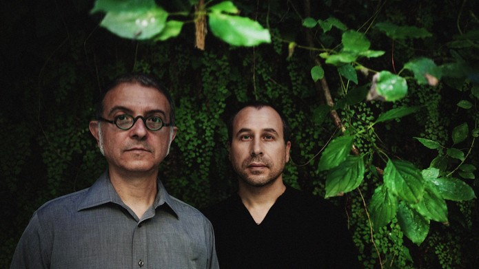

Voices From The Lake is an Italian electronic music duo consisting of Donato Dozzy and Neel, known for their immersive, meditative approach to ambient techno. Their self-titled debut album is widely regarded as a landmark in the genre, blending intricate soundscapes with hypnotic rhythms.
Voices From The Lake masterfully blend ambient textures with hypnotic techno rhythms, creating a deeply immersive and meditative listening experience. Their critically acclaimed debut album set a new standard for ambient techno, emphasizing intricate sound design and a connection to natural elements.
The 2012 debut album by Voices From The Lake is, for many, nothing less than the bible of ambient techno. Rarely have soft, nature-referencing sounds blended so seamlessly and organically with crackling percussion and digital effects. Italian producers Donato Dozzy and Neel released their new testament, 'II,' in 2025. A miracle occurred, as the gently flowing streams of invigorating dub techno, minimal techno, and ambient dub are even more refined. Live, the duo is like a séance: subtle, spiritual, sensational.
Het debuutalbum uit 2012 van Voices From The Lake is voor velen niets minder dan de bijbel der ambient techno. Zelden vloeiden zachte, aan de natuur refererende geluiden zo naadloos en organisch samen met knisperende percussie en digitale effecten. De Italiaanse producers Donato Dozzy en Neel kwamen in 2025 met hun nieuwe testament, ‘II’. Een mirakel geschiedde, want de rustig golvende stromen van verkwikkende dubtechno, minimal techno en ambient dub zitten nóg geraffineerder in elkaar. Live is het duo als een seance: subtiel, spiritueel, sensationeel.
2
⚤ Mixed
No